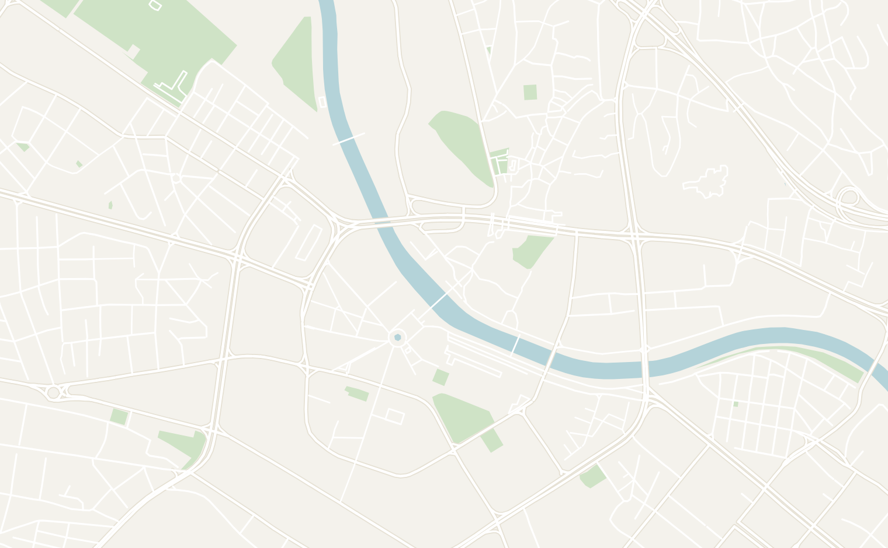
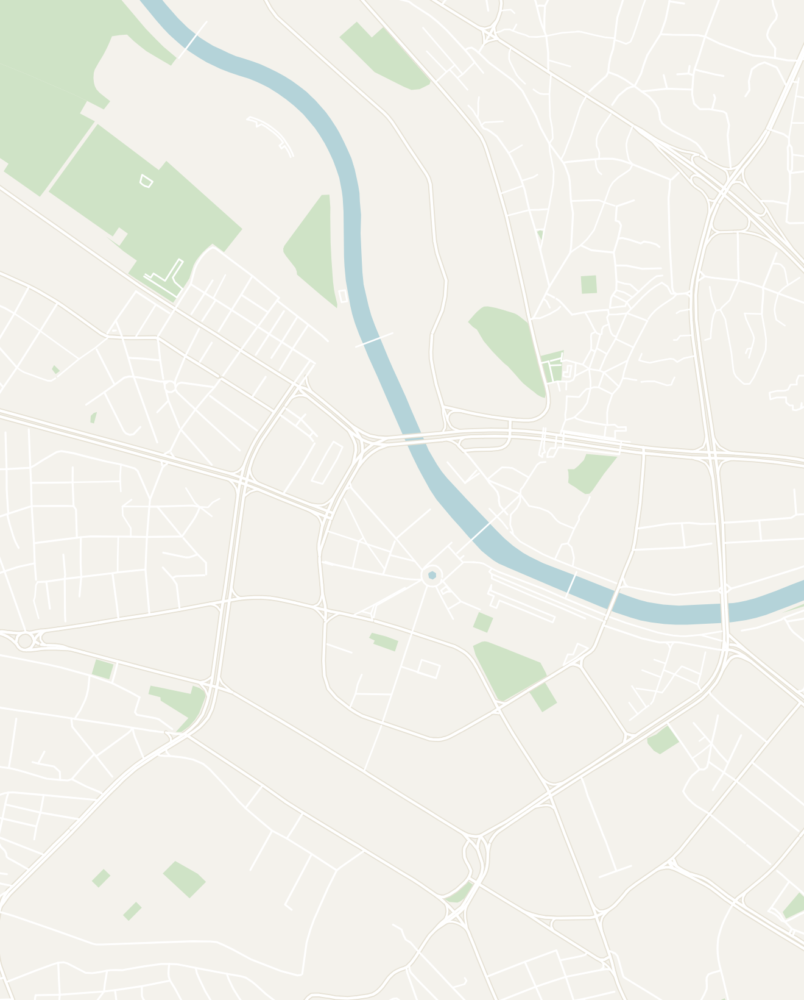

General
8 days recommended
- North Macedonia is one of the most underrated countries in the Balkans that is often overlooked in favor of its neighbors. I came in with muted expectations after already traveling through Slovenia, Croatia, Bosnia, Serbia and Montenegro, and it wound up near the top of my list for the whole region. It's safe, it's by far the cheapest place I've been in Europe, and outside of Ohrid you'll have most of the sights to yourself
- The country also has one of the strangest and most fascinating histories in Europe, starting with Alexander the Great all the way up to Yugoslavia. More recently, the country had an infamous dispute with Greece over its flag and name. It was only let in the UN and NATO after adding a "North" to its name in 2019. Meanwhile, the government spent over $700 million filling the capital with over 2,000 bronze heroes and fake classical facades. None of it makes sense, and I loved it
- My top 3↗ — a full day on the boat at Lake Ohrid, the quiet mountain streets of Krushevo and its spaceship monument, and the statues of Skopje 2014. The rest of the list is in my Top 10 Things to Do in North Macedonia
- The route I took↗ — every ride in North Macedonia is 4 hours or less, so you can do it all by bus. Here is the rough plan I followed: Skopje (days 1 to 2), Ohrid (days 3 to 5, including the boat tour), Krushevo (days 6 to 7) and Bitola (day 8), then over the border into Greece the next morning
- When to go↗ — May to June or September to October. At the end of May, the hills around Krushevo were green and the lake was glassy and tranquil. July and August have the hottest temperatures with Skopje pushing 95°F (35°C) and that's when Ohrid gets busy with visitors. Winters are cold and pretty quiet unless you've come to ski in the mountains near Krushevo
- Getting there↗ — most people land at Skopje International Airport (SKP), where Wizz Air flies in from more than 30 European cities, or connect through major hubs like Istanbul or Vienna. Ohrid also has a small airport with seasonal flights. Overland, Skopje has direct buses from every neighboring country at $10 to $30 a ticket on Gjirafa Travel and FlixBus

- Intercity buses↗ — buses run hourly between major cities like Skopje, Ohrid and Bitola. Most rides cost $5 to $10, and the longest ones up to $18. You can buy tickets at the station, and Transkop sells the Bitola routes online. I relied on Balkan Viator for times, but it's often wrong, so confirm your bus in person the day before
- Rental car↗ — $25 to $35 a day from Skopje Airport. A rental gives you the most freedom for Krushevo and the villages around Lake Ohrid, and there's little traffic once you've left the capital
- Taxis and apps↗ — Uber and Bolt don't operate here, and Skopje's local apps (Wizi and BeeRide) aren't reliable. Regular taxis are the best affordable option, but settle the fare before you get in
- Cash↗ — the Macedonian denar (MKD) is the official currency. Bigger restaurants and hotels in Skopje and Ohrid will take a card. Bakeries, buses, taxis and most places in Krushevo or Bitola won't. Carry small bills: some vendors will refuse to take larger bills
- Safety↗ — North Macedonia has a Level 1 rating on the US travel advisory, which makes it "officially" safer than France, Italy and Spain. I was out late at night in Skopje, Ohrid and Bitola and never felt uneasy. Macedonian people are extremely friendly and often went out of their way to help, so you'll get a real taste of the famous Balkan hospitality
- Visa↗ — you can stay 90 days without a visa on a US, Canadian, EU, UK or Australian passport, and there's no fee, just a stamp. Immigration at Skopje airport took a couple of minutes, and the only extra step when I crossed to Greece at Medžitlija was giving my fingerprints
- Language↗ — the official language is Macedonian, a close relative of Bulgarian and Serbo-Croatian. It's written in Cyrillic, but lots of signs are in Latin letters too, and you'll get by in English almost everywhere
Your money goes a long way here in North Macedonia as it is one of the most affordable travel destinations in Europe. Here is what to expect in terms of budget:
Macedonian cuisine is hearty Balkan comfort food with 500 years of Ottoman influence, and a proper meal almost never goes over $10. Here are the dishes I'd look for:
- Tavče gravče↗ — the country's national dish: white beans baked slowly in a clay pan with onions and dried red peppers until the top goes crisp and the inside turns thick and smoky. It's simple comfort food, and it usually arrives still bubbling. Restaurant Skopski Merak does a great one
- Kebap↗ — small grilled rolls of beef and lamb (what Bosnians call ćevapi), served with warm flatbread and raw onion. My favorite plate was at Kaj Гоце in Skopje's Old Bazaar
- Burek and ayran↗ — flaky pastry stuffed with cheese, meat or spinach for about $2 at any bakery, usually washed down with a cold, salty yogurt drink that's a bit of an acquired taste
- Shopska salad↗ — the salad that starts almost every meal: tomatoes, cucumbers, onions and peppers under a pile of grated white cheese
- Sarma and polneti piperki↗ — cabbage leaves or peppers stuffed with rice and minced meat, with a big spoonful of sour cream on top. I had the sarma at Krushevska Odaja and the peppers at Viva Ksantika kaj Tanja
- Turkish coffee↗ — the most popular way to drink coffee here, a holdover from five centuries of Ottoman rule. You'll get it brewed in a little copper pot and served strong and thick in a tiny cup, usually with a piece of Turkish delight, and you'll want to leave the last sip since the grounds sit at the bottom. Take your time with one in Bitola's old bazaar, like everyone around you


Skopje
2 days recommended
Nicknamed the "Disneyland of the Balkans," this is where you'll get your first taste of Macedonia. Spoiler Alert: it's weird in the best way with fake pirate ships in the river, bronze heroes on every corner, jarring brutalist buildings and an Ottoman bazaar across the bridge. Nearly all of the statues date to the early 2010s, courtesy of a government project called Skopje 2014. Most travelers I met only gave it 24 hours, but I'd give it a full 2 days.
- From the airport↗ — Skopje International Airport sits 25 minutes outside the city. The WTransporter airport shuttle lines up with the flights, waits right outside the terminal and gets you to Macedonia Square in about 30 minutes for about 200 denars ($3.50). A taxi is a fixed 1,200 to 1,500 denars ($20 to $25), so only use it if you have a lot of luggage
- From neighboring countries↗ — direct buses from most major cities in the region including: Pristina (Kosovo), Sofia (Bulgaria), Tirana (Albania), Belgrade (Serbia) and Podgorica (Montenegro). Thessaloniki (Greece) only has 1 or 2 a day. Check schedules and prices on Gjirafa Travel and FlixBus
- From elsewhere in the country↗ — Ohrid and Bitola have buses about every hour (3 to 4 hour journey). Krushevo gets just a handful of direct minibuses (3 hours, 430 denars or about $8)
- Getting around↗ — the center is small and flat, and the main sights are all within a 20-minute walk of each other. The red double-deckers cost 35 denars ($0.65) in the SkopjeBus app, but you'll likely never need one. Taxis are the easy backup: agree on a price first
- Macedonia Square and the Alexander the Great Statue↗ — the white marble center of Skopje 2014, with a 4-story Alexander the Great on horseback above a fountain and a giant Skopsko beer ad behind him. His official name is Warrior on a Horse, a way around the naming feud with Greece
-mob-2x.jpg)

- Bridge of Civilizations and Stone Bridge↗ — the Bridge of Civilizations is lined with dozens of statues and classical lanterns and one of the best things to see in town. It ends at the National Archaeological Museum. The Stone Bridge is the old Ottoman-era bridge over the Vardar River, busy with foot traffic heading to the Old Bazaar, where a giant statue of Philip II, Alexander's father, greets you on the other side
- The pirate ships↗ — you'll be surprised to see three mysterious pirate ships parked in a small river in a landlocked country! Nobody could tell me why they're there, not even our walking tour guide. One is now an Italian restaurant, and the other two sit abandoned and covered in graffiti

- Macedonia Gate and Woman-Warrior Park↗ — a copy of the Arc de Triomphe at the south end of the square, with Macedonian murals down its sides. Right next door, Woman-Warrior Park is a pleasant green space full of even more statues
- Free Skopje Walking Tours↗ — the best way to hear a local's perspective and make sense of this country. It leaves Macedonia Square at 10 AM every day and runs 2 to 3 hours for tips only (cash), with a burek stop along the way. You'll learn a ton, from the ancient Macedonians and Yugoslavia to the naming fight with Greece and why a Slavic country claims Alexander the Great
- Old Bazaar↗ — cross the Stone Bridge and you're suddenly in the Ottoman Empire: cobblestones, low wooden shops, Turkish coffee and a whole street of gold jewelers. People often call it the biggest Ottoman bazaar in the Balkans outside Istanbul


- Archbishop Cathedral of St. Clement of Ohrid↗ — a round, brutalist church made of nothing but domes and black arches, 10 minutes on foot west of Macedonia Square. Inside is a single circular room covered in gold murals on a deep blue background. It's one of the most unusual churches I've ever seen, and Christ in the central dome has eyes 1.5 meters across!
- Central Post Office↗ — a brutalist icon just minutes from Macedonia Square: a 5-story concrete tower with shiny purple windows and AC units stuck to the walls, and a fleet of brand-new yellow delivery vans parked below. It's straight out of a dystopian sci-fi movie, and I loved it


- Church of St. Constantine and Helena↗ — don't miss this one! a modern church with geometric stonework and scaled golden domes outside and covered with gold-on-blue paintings on the inside. It is a quick visit only takes 15 minutes to visit
- Mother Teresa Memorial House↗ — Mother Teresa was born in Skopje in 1910, which surprises most people. Her memorial house is a small, modern glass building right next door to St. Constantine and Helena. It's only 2 rooms on her life, plus a chapel upstairs and a view from the roof, so it's a quick 20-minute visit
- Kale Fortress↗ — overlooking the entire town is a 6th-century fortress, just a 10-minute walk up from the bazaar. Walk the walls for a view of the town below, where the new monuments sit among old apartment blocks. It's free and worth 30 minutes, ideally at sunset, and so few people come up here that you'll probably have it to yourself


- Matka Canyon↗ — an emerald-green lake between limestone walls, 30 minutes from the center of Skopje. Experience the canyon via kayak or an hour-long boat to Vrelo Cave for about 500 denars ($9). Take a taxi or city bus 60 from the main bus station. I skipped it and the travelers I met had mixed reviews, so set your expectations accordingly
- Tetovo↗ — the day trip I regret skipping most. The reason to go is the Painted Mosque (Šarena Džamija). Its wooden dome is covered in a painted floral design and is considered one of the most beautiful in the Balkans. It's 45 minutes west of Skopje by bus for 120 denars ($2), and a half day is plenty
- Restaurant Skopski Merak↗ — a local favorite for traditional Macedonian food in the bohemian Debar Maalo neighborhood. It's an upscale restaurant packed with locals, but a full meal of tavče gravče with an ice-cold Skopsko beer was still under $10
- Kaj Гоце↗ — a small place in the Old Bazaar with a friendly older owner. I went straight there for kebap the afternoon I arrived, and it's still my favorite quick meal in the country

- Dude Coffee↗ — rated No. 85 on the World's 100 Best Coffee Shops list and the best coffee of my trip. The coffee shop is set in a Victorian-style house where every room has a different wacky theme. A great place to spend a slow morning


- Debar Maalo↗ — the bohemian quarter of town and where I'd stay. It's leafy, full of restaurants and cafes and 10 minutes on foot from Macedonia Square. I booked a studio on Airbnb above a row of restaurants and right next to a casino for $30 to $50 a night


Double-tap to open in Google Maps
Ohrid
2–3 days recommended
The town everyone comes to North Macedonia for: an Ottoman old town draped along a hillside, dozens of medieval churches and a castle above one of the oldest lakes in Europe, so clear you can watch fish from the dock. It's the most touristy place in the country (mostly day-trippers from Albania and Greece), but nothing like the crowds in France or Italy. Plan on 2 to 3 full days: at least one for the old town and one out on the water
- From Skopje↗ — buses about every hour from 4:30 AM to 9:30 PM, from the Skopje bus station to the Ohrid bus station, which is a 20-minute walk to the old town. The ride takes 3 to 4 hours, and tickets run 800 to 1,000 denars ($15 to $18)
- From Bitola↗ — direct buses run about every hour from 5:30 AM to 9:15 PM, taking about 1.5 hours. Just 15 minutes from the border, Bitola is also the main gateway to Greece
- From Krushevo↗ — there's no reliable direct bus, so take the minibus down to Prilep and change there for one of the buses to Ohrid (about 3 hours total)
- From Albania↗ — buses every 1 to 2 hours from the East Terminal in Tirana. The journey is about 3 hours and around €15 ($17)
- Rental car↗ — $25 to $35 a day at Skopje Airport, and the easiest way to explore the eastern shore of the lake on your own schedule
- Getting around↗ — the old town is very walkable, about 10 minutes from the waterfront to the Upper Gate. Water taxis and tour boats leave from the promenade. Skip the local apps (Wizi and Bel Mercedes Taksi) and negotiate with a regular taxi if you need one
- Old Bazaar Street & St. Clement of Ohrid Square↗ — the main street runs uphill from the lake to the Upper Gate, with wooden storefronts, a minaret and most of the restaurants in town. It gets crowded, so walk it early or after dark. At the bottom is St. Clement of Ohrid Square, a green square full of willows and flower beds, right on the water


- Old Swimming Court↗ — the best photo spot in town: a long, half-collapsed dock from the town's swimming days in the '60s and '70s. On a still morning the whole town is reflected in the water, and I kept going back here for the best views of the town

- The waterfront walk↗ — the best way to explore the lake is going for a stroll: head west along the boardwalk to Kaneo Beach (15 minutes from the main pier and the prettiest stretch), or east down the promenade to Cuba Libre Beach & Bar on Voena Plaža (about 20 minutes). You'll see schools of fish right from the shore, and sunset is peak hour to explore
- St. John Kaneo Church↗ — the church on every Ohrid postcard, up on a cliff and surrounded by the lake on all sides. The church itself is tiny, so you're really here for the view. Tour groups show up by late morning so show up early and you'll have it to yourself


- Labino Vista Point↗ — a hidden gem a few minutes past the church with a beautiful view of willows, wildflowers and the lake below. There were maybe 3 or 4 other people here, while the old town was packed
- Samuel's Fortress↗ — the fortress you can see from everywhere in Ohrid, first built in the 4th century BC. Walk the walls and admire the view of the lake below. About 120 denars ($2) and an hour at most. It shuts in the afternoon, so aim for the morning

- Old Town View Point↗ — my favorite spot on the hill, a small lookout right by the Upper Gate with a great view of the town and lake below
- Ancient Macedonian Theatre of Lychnidos↗ — a short walk past the Upper Gate, built around 200 BC. The Greeks staged plays here, the Romans had gladiator fights, and the Ohrid Summer Festival still puts on concerts here to this day
- Church of St. Sophia and Plaošnik↗ — St. Sophia is an 11th-century church with original frescoes and also spent time as a mosque. Plaošnik, downhill from the fortress toward Kaneo, is the world's oldest Slavic monastery, with 5th-century mosaic floors. Ohrid supposedly had 365 churches at one point (one a day for a whole year), and these two are among the best
- The side streets↗ — leave Old Bazaar Street behind and wander. Nearly every alley climbs to a view of the lake and it's the easiest way to lose the crowds
- Lale Tours full-day boat tour↗ — book this before you plan anything else, it was my favorite day in the whole country. You'll get picked up in the morning for about 8 hours and explore the lake and have a barbecue lunch at St. Zaum. The tour costs $80 to $100, but covers the best spots on the lake listed below:


- Bay of Bones↗ — a recreated Bronze Age village on stilts, named for the 6,000 piles of animal bones found on the lake bed. We only passed by on the boat, and friends who stopped gave it mixed reviews since everything is a modern reconstruction
- Trpejca↗ — the "Macedonian Saint Tropez," a small fishing village on the east shore known for the clearest water on the lake. A 10-minute hike takes you to the viewpoint, the best one on the entire lake

- St. Naum Monastery and the springs↗ — hands down my favorite spot on the lake. St. Naum Monastery dates back to the 10th-century and is also home to free-roaming peacocks. However, the real reason to come is the channel of spring water beside it, hire a rowboat at the landing (20€ for the three of us) and admire the clarity of the water: clear enough to see every leaf on the bottom


- Viva Ksantika kaj Tanja↗ — a family-run place near the main pier with great outdoor seating. I had the polneti piperki, stuffed peppers with a huge dollop of sour cream
- Pekara Bulevar↗ — a neighborhood bakery just outside the old town and my breakfast spot almost every morning. The guy at the counter was really friendly, the pastry selection is good, and a full breakfast only costs a couple of dollars
- Plate Bistro↗ — a western-style restaurant serving a diverse array of bowls and salads. The food wasn't Macedonian at all, but the burrito bowl hit the spot after weeks of meat and bread
- Old Town Hostel Ohrid↗ — my favorite hostel in the country, and way more social than I expected. The common room filled up every night with some interesting backpackers and the hostel owner was very helpful with bus schedules

- Airbnb across from the old town↗ — under $50 a night for a modern place with a separate bedroom, a sunroom and fast wi-fi. Located just 10 minutes on foot from the water


Double-tap to open in Google Maps
Krushevo
1–2 days recommended
Krushevo is a picturesque little town sitting high in the mountains of North Macedonia at 1,350 meters and one of my favorite places in the country. Home to just 4,000 people, the town is situated in a narrow pine valley of white houses with red roofs. You can walk from one end to the other in about 20 minutes. You come for the pace of traditional Macedonian life more than the sights: tractors driving through the main street, firewood stacked for winter and old folks on the porch with nowhere to be. Give it 1 or 2 nights to fully experience the town
- From Skopje↗ — the easiest way to get to Krushevo with 3 direct minibuses a day from the Skopje bus station (7:45 AM, 3:45 PM and 4:45 PM; Sundays at 7:45 AM, 4:45 PM and 7:00 PM). The journey is 3 hours and 430 denars (about $8)
- From Ohrid↗ — catch a bus from the Ohrid bus station to Prilep, then change to a minibus. Balkan Viator lists one direct bus a day, but it never showed up for me
- From Bitola↗ — the Bitola bus station has 2 direct minibuses a day (12:20 PM and 4:30 PM). It's about a 2-hour ride and costs 180 denars (about $3)
- Avoid Sundays↗ — half the buses don't run and Prilep shuts down completely. I got stuck there facing a 7-hour wait, and that's how I ended up on the wildest taxi ride of my trip. Confirm every departure at the station, since the schedules online are all different
- Leaving town↗ — the Krushevo bus station is really just an unmarked lot at the foot of the main street. It looks dead until about 15 minutes before departure. Direct minibuses to Skopje leave at 7:00 AM and 4:30 PM, and to Prilep about every 2 hours from 6:25 AM to 5:30 PM
- Wander the town↗ — start at the town square and the Church of St. Nicholas, then get lost on the steep lanes of Krushevo and admire the whitewashed 19th-century houses in Vlashko Maalo. Everyone says zdravo (hello) as you walk by, and a friendly dog or two might follow you to the viewpoints


- Makedonium↗ — the highlight: a Yugoslav monument on the hill that looks like a spaceship, a giant pine cone or a COVID-19 virus (depending on who you ask). It was built in honor of a key moment in Macedonian history, when the Krushevo Republic held off the Ottomans for 10 days. Inside it's all white, with reliefs and stained glass. Nobody was there my first visit, so if it's locked, ask a local to call the attendant


- The viewpoints↗ — the best places to get a view of Krushevo are: the balcony or restaurant terrace at Hotel Montana Palace, an unmarked viewpoint west of the square (just follow the Google Maps pin), and the City Cemetery on the north side of town

- Mechkin Kamen↗ — an easy hike through the forest, about 5 miles and 2 hours round trip, starting on the road behind the hotel. It culminates with a statue of a rebel holding up a rock, with СЛОБОДА ИЛИ СМРТ ("Freedom or Death") in big letters. Google Maps was enough to find the way there, and I ended up hiking it with 2 American Peace Corps volunteers


- Yugoslav relics↗ — wander around to discover the remnants of Yugoslavia scattered throughout the town. Old cars like the Zastavas and Yugos are parked on every slope, some running and others clearly retired decades ago, plus an abandoned glass factory on the edge of town


- Toše Proeski Memorial House↗ — a museum to the "Elvis of the Balkans", a famous pop singer who grew up here and suffered an untimely death at 26. It's also located next to the park with the Nikola Karev statue, on your way up to the Makedonium
- Nikola Martinoski Gallery↗ — a traditional 3-story house full of his paintings. The family opened the whole place up just for me, but to be honest it's a 10-minute visit and skippable
- Krushevska Odaja↗ — the best restaurant in town, with rustic decor and traditional food. Get the sarma (cabbage rolls filled with rice and minced meat, with sour cream on the side)


- Marchelo Lounge Bar↗ — a small restaurant just off the square. Order the selsko meso, a stew of chicken and pork meatballs with tomatoes and cheese that comes in a clay pot with bread on the side. I never saw it on a menu anywhere else in North Macedonia, and it was among the better meals of my trip
- Hotel Montana Palace↗ — I don't usually eat at hotels, but the meals here were great. Try tavče gravče, the national dish of baked white beans, for dinner and mandza, a hunter's stew of beef, potatoes and vegetables, for breakfast
- Hotel Montana Palace↗ — by far the best place to stay in town: a 4-star hotel that runs $85 a night. You'll have a room with a balcony looking across the valley at the Makedonium. I caught the sunset from mine both nights and was one of the only guests during my time there


Double-tap to open in Google Maps
Bitola
1 day recommended
Known as the "City of Consuls," Bitola was formerly one of the most important cities in Ottoman Europe. I only planned on a stop before crossing into Greece, but it was the most pleasant surprise of my trip. The highlights were a long cobblestone street of yellow consulate-era buildings, a working Ottoman bazaar with snowy peaks behind it and amazing Roman mosaics. It isn't a tourist city, and that's a big part of the appeal. One full day is enough time to see all the sights here.
- From Skopje↗ — buses every hour from 4:15 AM to 9 PM from the Skopje bus station, and the entire ride takes 3 to 4 hours. Transkop sells tickets online, or buy at the station
- From Ohrid↗ — direct buses about every hour from 6 AM to 8:30 PM from the Ohrid bus station (about 1.5 hours one-way)
- From Krushevo↗ — take the direct minibus, which leaves about every 3 hours between 6:40 AM and 3:20 PM, or ride a bus to Prilep and catch one of the hourly connections to Bitola from there. Both take about 2 hours
- Crossing into Greece↗ — book a taxi or private transfer through your accommodation to Florina, roughly €40 (about $45) and 45 minutes since no buses cross here. The border crossing was seamless and the Florina bus station connects to the rest of Greece from here
- Širok Sokak↗ — a gorgeous cobblestone walking street, almost a kilometer long, lined with warm yellow buildings from the late 1800s, when a dozen European consulates gave Bitola its nickname. Today it's the center of social life in Bitola, lined with cafes, bars and restaurants that were packed even on a Tuesday afternoon, so experience the Macedonian cafe culture by grabbing a seat and watching the city go by


- Magnolia Square and the clock tower↗ — an 8.5-meter Philip II marks the start of the square, which opens into a green park with a 33-meter clock tower. Legend has it 60,000 eggs went into the mortar!


- Old Bazaar↗ — an Ottoman market quarter that has been trading since the 1400s and still operates to this day. Stop for a Turkish coffee, and get a photo of the Isak Mosque with the snowy peaks of Pelister National Park behind it
- Heraclea Lyncestis↗ — the ruins of a Roman town complete with a theater, basilicas and huge well-preserved floor mosaics of peacocks, lions and birds. It costs 180 denars (about $3) to enter and half an hour is enough


- NI Institute and Museum Bitola↗ — the former Ottoman military academy that has been converted into the largest museum in Bitola. It costs 180 denars (about $3) and it's worth an hour if you're into Ottoman history, but not the most impressive museum I've seen
- Turkish coffee in the old bazaar↗ — the best way to feel the pace of the place and experience Macedonian Cafe Culture. I picked Dembel Čaršija and enjoyed the experience
- Donerium↗ — a tiny doner shop on Širok Sokak where a meal is just a few dollars. The perfect stop for a quick and cheap meal
- Širok Sokak↗ — stay within a few blocks of the main walking street and you can walk to all the main attractions in town. I had a whole Airbnb to myself for about $30 a night, and the host even set up my transfer to Florina the next morning
Other Places to Consider
- Pelister National Park↗ — widely known as the country's best national park, and you can even see its snowy peaks behind Bitola. The big hike is to Golemo Ezero, a glacial lake high up in the mountains, and the hike takes 12 km round trip (or 6 to 7 hours). I ran out of time, but friends loved it, and it's the first thing I'd do on a return trip
- Prilep↗ — the fourth-largest city in the country, and you'll only really want to stop here if you're changing buses. If you have a few hours on a weekday, Markovi Kuli, a medieval fortress on the hill above town, has the best views. It's also home to Pivofest, a 4-day beer festival every July
- Kosovo↗ — Pristina is only about 2 hours from Skopje by bus, but this tiny country deserves more than a day trip. Give it 2 to 3 days to get into the politics and see the Ottoman old town of Prizren. See my Kosovo field notes for everything you need to plan a trip
Explore More